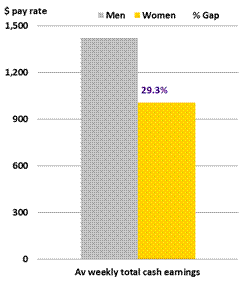
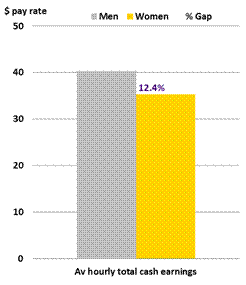
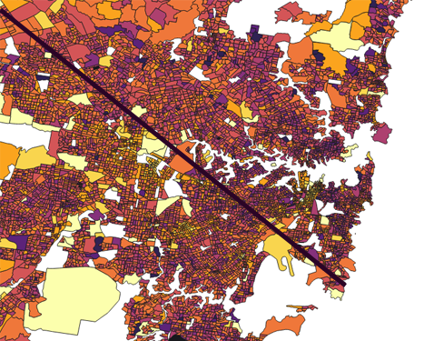

MAP 1: color: white-black-red (ratio:0-1-3.4) height:personal total income(weekly) MAP 2: color: white-red--yellow-black (range:0-664-5000-11540) personal total income(weekly) height:female/male income(weekly) (ratio:1-3.4)
From the map 1, it can be easily seen that the Gender wage ratio between 0-1 occupied a large part of the SA1. And also the area where women earn more than men is not absent, but in terms of proportion, it can indicate the inequality between incomes. From the map 2, it can be seen that the place where women’s wages are higher than men is not a high-income group.As "The median weekly personal income for people aged 15 years and over in New South Wales was $664." (Quickstats.censusdata.abs.gov.au, 2018) So compare map 1 and map 2, we can find the existence of a income gap by gender. "Official wages data shows there is a gender pay gap favouring full-time working men over full-time working women in every major industry and occupational category in Australia. The biggest gender pay gap in November was in finance and insurance (26.1 per cent) while the smallest was in public administration and safety (6.8 per cent)."(Wade, 2018)-
Data Map
-
-
1.Ratio of Female income/Male income(weekly)
-
2.Ratio of Female income/Male income(weekly)
Female income/Male income(weekly,2016)→
-
There is a income gap by gender.
Sometimes, under the same working conditions, women earn less than men.
And also under different working conditions, women are often in an unfavorable situation due to invisible gender discrimination.
Such a kind of situation leads to the gap of income differences.
-
City of Sydney - Persons aged 15+ (Usual residence)
Gender wage gap.
-


Average total cash earnings of non-managerial employees paid at the adult rate, May 2016
-
Women are more engaged in part-time jobs, almost half (46%) of all female employees working part-time hours compared to about 18% of male employees (Aph.gov.au, 2018).
Because of the child care, ABS Gender Indicator data of 2016 shows 62% of employed women with a child under five work part-time, while only 8.7% of men do (Livsey, 2018).
Female employees are typically underrepresented in managerial roles (approximately 31% of senior and middle level managers in 2015) (Aph.gov.au, 2018).
- - Discrimination and bias in hiring and pay decisions
- - Women and men working in different industries and different jobs, with female-dominated industries and jobs attracting lower wages
- - Women's disproportionate share of unpaid caring and domestic work
- - Lack of workplace flexibility to accommodate caring and other responsibilities, especially in senior roles
- - Women's greater time out of the workforce impacting career progression and opportunities.
(Wgea.gov.au, 2018)
"The so-called latte line, a border that splits Sydney down class and economic lines running from the airport north-west through Parramatta, is illustrated in new data from the Australian Bureau of Statistics that uses measures of income, occupation and other information to rank an areas' economic and social conditions as part of their Socio-Economic Indexes for Areas (SEIFA). "(Gladstone, 2018)
We can see from the distribution location map on the right, there is no obvious difference between the two sides of the latte line, which shows that the income gap between genders is ubiquitous.
-
Gender wage gap distribution location
 ratio:3.4-0
ratio:3.4-0